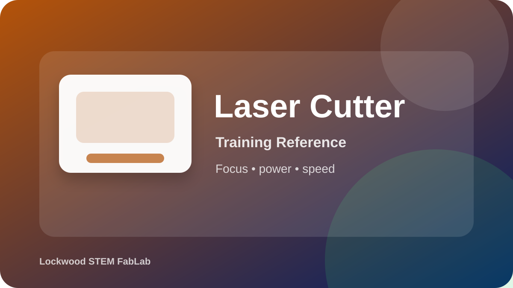

Train on the larger OMTech laser for approved cutting and engraving jobs that require careful material choice, focus, ventilation, and monitoring.
Open official product/source page
This page prepares you for the hands-on check. Passing the quiz does not replace the instructor sign-off.
Use these visuals to connect the training steps to what you will see in the FabLab.
Use this image to identify the correct tool, major features, and safe handling areas before your hands-on check.
Confirm the workspace is clear, required PPE is ready, and the tool is set up exactly as directed.
Inspect the work, clean the area, and report anything unusual before leaving the station.
Focus on fire awareness, approved materials, ventilation, and safe laser habits.
Open video on YouTubeUse this to preview the general laser cutting workflow before hands-on training.
Open video on YouTube| What You Notice | Best Response |
|---|---|
| Heavy smoke | Stop and check ventilation, material approval, and settings. |
| Small flame | Stop or pause according to instructor procedure; never leave the machine. |
| Weak cut | Check focus, speed/power, material thickness, and lens cleanliness with instructor. |
| Excessive burning | Increase speed, reduce power, improve focus, or test settings. |
| Unknown smell/material | Stop immediately; do not cut unknown plastics. |
What materials may be cut?
What should you do during the job?
Use these visual references to identify the equipment and review the workflow before using the tool.
Equipment overview
Setup checkpoint
Safe cleanup
Use these videos as support before your hands-on classroom demonstration. Your teacher’s directions and FabLab safety rules always come first.